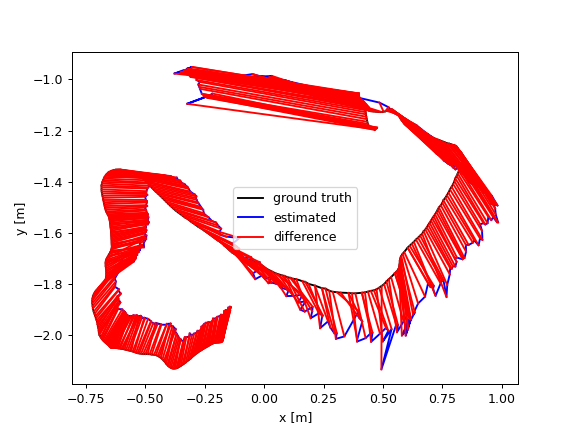
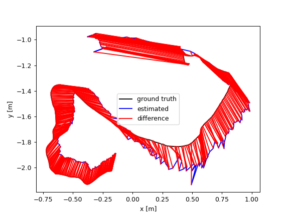

Introduction
ORB-SLAM3 is a feature-based SLAM system that supports Visual SLAM and Visual-Inertial SLAM (VIO-SLAM), meaning it can fuse IMU measurements (when available) with image-based tracking to improve robustness and scale observability.
While ORB-SLAM3 is highly accurate in static environments, it can fail in dynamic scenes (e.g., people walking) because moving objects violate the rigid-world assumption: dynamic keypoints can be triangulated into incorrect 3D MapPoints, which then corrupt pose estimation and pose-graph optimization.
DynamicSfM: motion-consistency pruning
My first approach was to detect dynamic feature points by using a lightweight Structure-from-Motion (SfM) cue: compute the moving direction of tracked feature points, then prune outliers whose motion direction disagrees with the majority of points (assumed to be background). Then after the dynamic objects stopped moving (person putting down a box), it can be used to reconstruct the scene again.
This significantly improves robustness in many dynamic sequences (e.g., on the Bonn RGB-D Dynamic Dataset), with large reductions in ATE reported in my repo (up to ~97% improvement in some scenes).


The above images compare the trajectory estimated by ORB-SLAM3 with and without DynamicSfM pruning on two sequences from the Bonn RGB-D Dynamic Dataset: moving non-obstructing boxes (left two) and placing non-obstructing boxes (right two). The black trajectory is the ground truth, the blue trajectory is the estimated path, while the red one is the difference between ground truth and estimated path. We can see that DynamicSfM significantly improves accuracy by removing dynamic feature points, while the vanilla ORB-SLAM3 drifts heavily due to moving objects.


The dynamic SfM approach ran in two different scenes, moving non-obstructing boxes (left) and placing non-obstructing boxes (right). In the video, we can clearly see that the feature points on the moving human and boxes are successfully pruned, allowing ORB-SLAM3 to maintain accurate tracking on the static background. After the box is steady, the feature points are detected again to reconstruct the scene.
Caveat: if the dynamic object moves in roughly the same direction as the camera (or dominates the view), motion-consistency can no longer reliably separate foreground from background. In these cases, the algorithm may fail to prune the correct points and SLAM can degrade or even break.
 

When the person moves in the same direction as the camera (left), DynamicSfM fails to prune dynamic points, leading to significant drift in the estimated trajectory (right).
ROS2 masked ORB-SLAM3: YOLO + FastSAM + ZMQ
To address the failure mode above, I built a second pipeline that removes dynamic regions explicitly:
- Receive unprocessed RGB images (and depth for RGB-D mode) from a dataset publisher in ROS2.
- Run YOLO to detect humans and output bounding boxes.
- Use each bounding box as a proposal for FastSAM to generate a pixel-accurate human mask.
- Send/receive images + proposals via a lightweight ZeroMQ (ZMQ) inference server (ROS ↔ Python models).
- Feed the mask into ORB-SLAM3 and prune any feature points / MapPoints that overlap the dynamic region before pose estimation.
This design keeps ORB-SLAM3 fast and stable, while allowing flexible swapping of detection/segmentation models on the server side.


The above images compare the trajectory estimated by ORB-SLAM3 with YOLO+FastSAM masking (left), DynamicSfM pruning (middle), and the vanilla ORB-SLAM3 (right) on the Bonn RGB-D Dynamic Dataset's person-tracking sequence. The black trajectory is the ground truth, the blue trajectory is the estimated path, while the red one is the difference between ground truth and estimated path. We can see that YOLO+FastSAM masking significantly improves accuracy by removing dynamic feature points, while both DynamicSfM and vanilla ORB-SLAM3 drift heavily due to moving humans in the same direction as the camera.
Results
On the Bonn RGB-D Dynamic Dataset (Person-Tracking), the ROS2 masking pipeline dramatically improves trajectory accuracy compared to both the vanilla baseline and motion-consistency pruning. In my repo example, ATE improves from ~0.65 m (baseline) / ~0.29 m (DynamicSfM) to ~0.04 m (YOLO+FastSAM masking).
Conclusion
This project improves the robustness of ORB-SLAM3 in dynamic environments by addressing its sensitivity to moving objects. A geometry-based DynamicSfM approach was first used to prune inconsistent feature motions, but it fails when dynamic objects move in the same direction as the camera. To overcome this limitation, a semantic-aware pipeline combining YOLO, FastSAM, and ORB-SLAM3 was developed in ROS2, where dynamic features are removed using real-time human segmentation. Evaluated on the Bonn RGB-D Dynamic Dataset, the proposed system achieves up to 90% accuracy improvement, demonstrating that integrating semantic perception with geometric SLAM is essential for reliable real-world deployment.
References
[2] Bonn RGB-D Dynamic Dataset